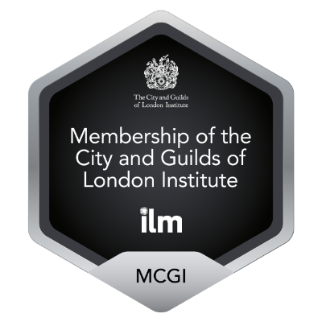
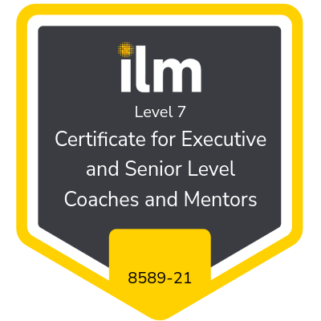

Adapt and Achieve
Supporting people and organisations to adapt with clarity, confidence and resilience.
Coaching for individuals navigating transition, alongside practical business continuity support for organisations preparing for disruption.
Supporting people and organisations to adapt with clarity, confidence and resilience.
Coaching for individuals navigating transition, alongside practical business continuity support for organisations preparing for disruption.
Adapt and Achieve supports both individuals and organisations through change.
Whether that means helping someone think clearly about their next chapter, or helping an organisation prepare for disruption, the aim is the same: practical support that builds confidence, resilience and steady progress.
One-to-one coaching for people at a point of change, transition or reflection. A calm, supportive space to think clearly, regain confidence and move forward with purpose.
Explore CoachingPractical support for organisations that want straightforward, usable business continuity arrangements without overcomplicating things.
Explore Business ContinuityHelping people and organisations move through change with greater clarity, confidence and purpose.
I’m an ILM Level 7 Executive Coach with more than 20 years’ experience leading through complexity, change and uncertainty in senior NHS roles.
Through Adapt and Achieve, I bring that experience into two connected areas of work: coaching individuals through their next chapter, and supporting organisations to strengthen resilience through practical business continuity support.
My approach is calm, honest and grounded in real-world experience.


ILM Level 7 Certificate for Executive and Senior Level Coaches and Mentors, and Member of the City and Guilds of London Institute (MCGI).
If you would like to explore coaching for yourself, or business continuity support for your organisation, I’d be happy to have an initial conversation.
No pressure, just a conversation to see if it feels like the right fit.